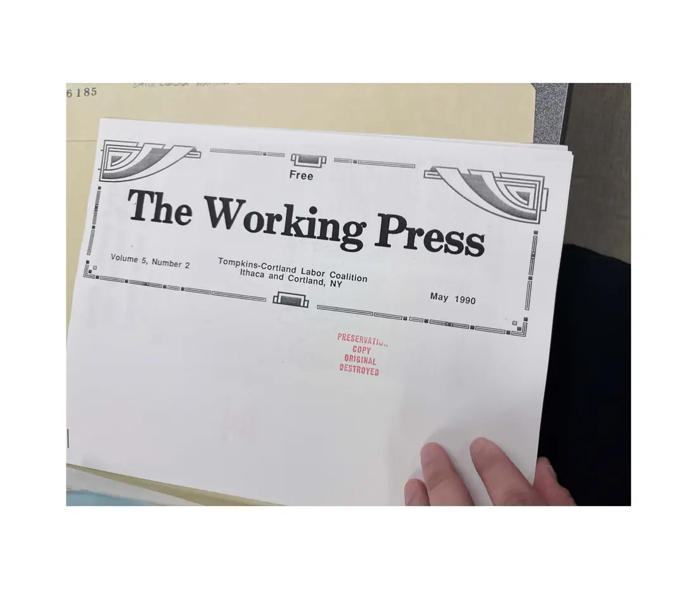
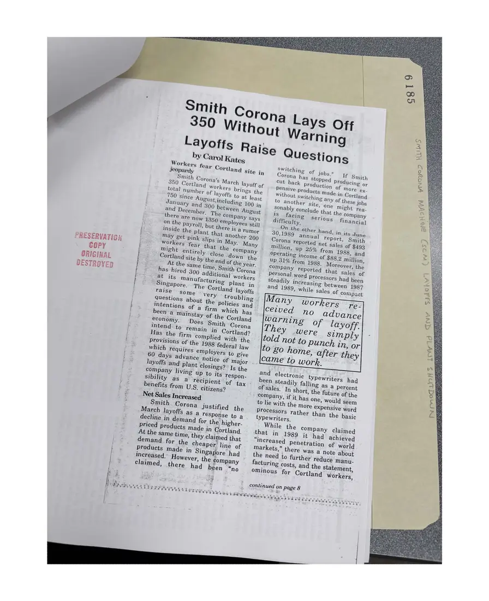
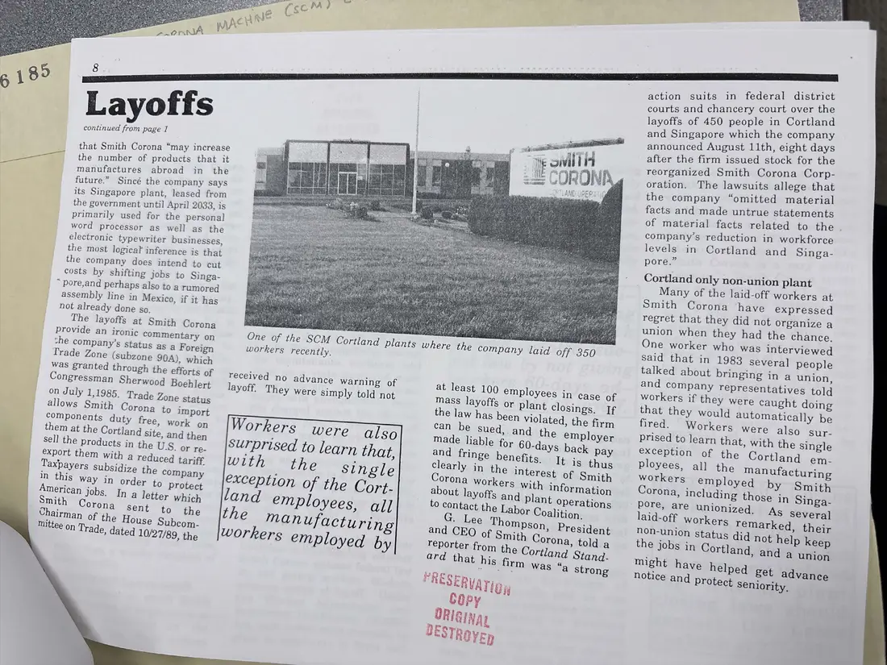
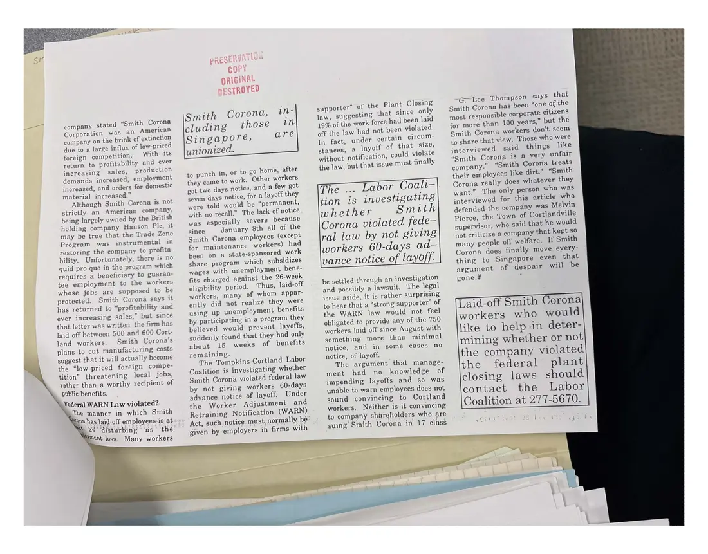

Newsletter, 4 pages
The Working Press, Volume 5, Number 2, May 1990: Smith Corona layoffs
May 1990
The cover of the coalition's newspaper and the article “Smith Corona Lays Off 350 Without Warning: Layoffs Raise Questions” by Carol Kates, continued on an inside page.
Download or cite this itemPages


(open zoom view)Read the page text (machine-read, many errors)
This text was generated automatically from the photograph and has not been corrected. The image is the authoritative record.
6 185 Free Tompkins-Cortiang Labor Coalition Volume 5. Number 2 Ithaca ang Cortlang, NY rare Cli args PRESERVAT; COPy ORIGINAL


(open zoom view)Read the page text (machine-read, contains errors)
This text was generated automatically from the photograph and has not been corrected. The image is the authoritative record.
Smith Corona’s March la Yoff of 350 Cortland Workers brings the total number of layoffs to at least there are NOW 135 employees still on the Payroll, but ¢ ej [: inside the Plant tha ; May get pink Slips j May. PRESERVATION i Workers ‘fear that the 8s oe copy x might entirely close down the e Cortland Site by the end of the year. ORIGINAL ae At the Same time, Smith Corona © DESTROYED = has hired 300 a itional workers Singapore. The Cortland layoffs | raise some Very tr | ry intentions of a firm which has y benefits from YU. - citizens? I Net Sales In d S Smith Corona Justified the a Se i a) are Saas Ce ran ae i Rea ; PSI AY aia, | questions about the Policies and. * Company, if it has one, would seem million, UP 25% from 1988, ang operating income of $88.2 million, UP 31% from 1988. Moreover, the and electronic typewriters had been Steadily falling as a Percent of sales. In short, the future of the Processors rather than the basic typewriters. While the company claimed that in 1989 it had achieved “increased Penetration of world markets,” there was a note about the need to further reduce manu- facturing costs, and the statement, ominous for Cortland Workers, continued on Page 8 Wiha aal btiet eure sini Dy ae es Ue wn & im) “1h Na TES d


(open zoom view)Read the page text (machine-read, mostly readable)
This text was generated automatically from the photograph and has not been corrected. The image is the authoritative record.
action suits in federal district Layoffs continued from page 1 that Smith Corona “may increase the number of products that it manufactures abroad in the future.” Sincé the company says its Singapore plant, leased from the government until April 2033, is primarily used for the personal word processor as well as the electronic typewriter businesses, the most logical inference is that the company does intend to cut costs by shifting jobs to Singa- ~ pore,and perhaps also to a rumored assembly line in Mexico, if it has not already done so. The layoffs at Smith Corona Provide an ironic commentary on the company’s status as a Foreign Trade Zone (subzone 90A), which was granted through the efforts of Congressman Sherwood Boehlert on July 1,1985. Trade Zone status allows Smith Corona to import components duty free, work on them at the Cortland Site, and then Sell the Products in the U.S. or re- export them with a reduced tariff Taxpayers subsidize the company in this Way in order to Protect American Jobs. In a letter which Smith orona, sent to the Chairman of the House Subcom. Mittee on Trade, dated 10/27/89, the workers recently. received no advance warning of layoff. They were simply told not exception of the Cort- land employees, ql] the workers employed by manufacturing One of the SCM Cortland plants where the company laid off 350 at least 100 employees in case of mass layoffs or plant closings. If the law has been violated, the firm made liable for 60-days back pay reporter f, the Cort] - ard that lagi ar es *RESERVATig , Copy ORIGINAY BESTRO VED courts and chancery court over the layoffs of 450 people in Cortland and Singapore which the company announced August 11th, eight days after the firm issued stock for the reorganized Smith Corona Corp- oration. The lawsuits allege that the company “omitted material facts and made untrue statements of material facts related to the company’s reduction in workforce levels in Cortland and Singa- pore.” Cortland only non-union plant Many of the laid-off workers at Smith Corona have expressed regret that they did not organize a union when they had the chance. One worker who was interviewed said that in 1983 several people talked about bringing in a union, and company representatives told workers if they were caught doing that they would automatically be fired. Workers were also sur- prised to learn that, with the single exception of the Cortland em- Ployees, all the manufacturing workers employed by Smith Corona, including those in Singa- pore, are unionized, non-union status did not help keep the jobs in Cortland, and a union might have helped get advance notice and Protect sen lority,


(open zoom view)Read the page text (machine-read, mostly readable)
This text was generated automatically from the photograph and has not been corrected. The image is the authoritative record.
company stated “Smith Corona Corporation was an American company on the brink of extinction due to a large influx of low-priced foreign competition. With its return to profitability and ever increasing sales, production demands increased, employment increased, and orders for domestic material increased.” Although Smith Corona is not strictly an American company, being largely owned by the British holding company Hanson Plc, it may be true that the Trade Zone Program was instrumental in restoring the company to profita- bility. Unfortunately, there is no quid pro quo in the program which requires a beneficiary to guaran- tee employment to the workers whose jobs are supposed to be protected. Smith Corona says it has returned to “profitability and ever increasing sales,” but since that letter was written the firm has laid off between 500 and 600 Cort- land workers. Smith Corona’s plans to cut manufacturing costs suggest that it will actually become the “low-priced foreign compe- tition” threatening local jobs, rather than a worthy recipient of public benefits. Yederal WARN Law violated? ~The manner in which Smith Aorahas laid off employees is:at Lag ‘disturbing ‘as the Ment loss. Many workers ORIGINAL pESTROYED Corona, in- those wn are Smith cluding Singapore, unionized. to punch in, or to go home, after they came to work. Other workers got two days notice, and a few got seven days notice, for a layoff they were told would be “permanent, with no recall.” The lack of notice was especially severe because since January 8th all of the Smith Corona employees (except for maintenance workers) had been on a state-sponsored work share program which subsidizes wages with unemployment bene- fits charged against the 26-week eligibility period. Thus, laid-off workers, many of whom appar- ently did not realize they were using up unemployment benefits by participating in a program they believed would prevent layoffs, suddenly found that they had only about 15 weeks of benefits remaining. The Tompkins-Cortland Labor Coalition is investigating whether Smith Corona violated federal law by not giving workers 60-days advance notice of layoff. Under the Worker Adjustment and Retraining Notification (WARN) ~ Act, such notice must normally, be: given by employers in firms with supporter” of the Plant Closing law, suggesting that since only 19% of the work force had been laid off the law had not been violated. In fact, under certain circum- stances, a layoff of that size, without notification, could violate the law, but that issue must finally The ... Labor Coali— tion 1s investigating whether Smith Corona violated fede— ral law by not giving workers 60-days ad- vance notice of layoff. be settled through an investigation and possibly a lawsuit. The legal issue aside, it is rather surprising to hear that a “strong supporter” of the WARN law would not feel obligated to provide any of the 750 workers laid off since August with something more than minimal notice, and in some cases no notice, of layoff. The argument that manage- ment had no knowledge of impending layoffs and so was unable to warn employees does not sound convincing to Cortland workers. Neither is it convincing to company. shareholders who are suing Smith Corona in 17 class -~Go-Lee Thompson says that Smith Corona has been “one of the most responsible corporate citizens for more than 100 years,” but the Smith Corona workers don’t seem to share that view. Those who were interviewed said things like “Smith Corona is a veTy unfair company.” “Smith Corona treats their employees like dirt.” “Smith Corona really does whatever they want.” The only person who was interviewed for this article who defended the company was Melvin Pierce, the Town of Cortlandville supervisor, who said that he would not criticize a company that kept so many people off welfare. If Smith Corona does finally move every- thing to Singapore even that argument of despair will be gone.& : Laid-off Smith Corona workers who would like to help -in deter- mining whether or not the company violated the federal plant closing laws should contact the Labor Coalition at 277-5670. ee shea
See something wrong, or recognize a person or event? Send a correction. If you hold rights in this item or think it should not be public, write to the same address.